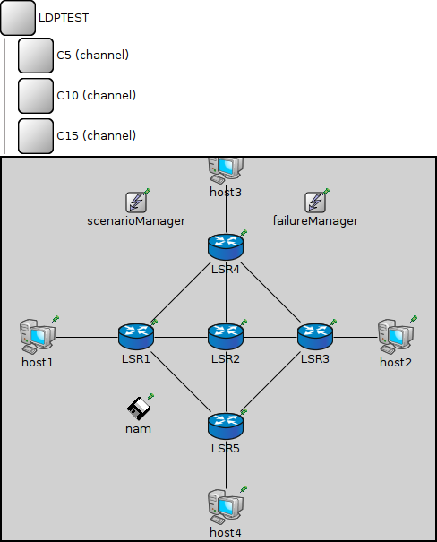
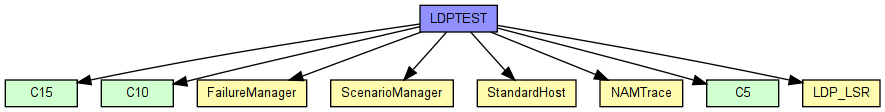
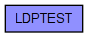

(no description)
The following diagram shows usage relationships between types. Unresolved types are missing from the diagram. Click here to see the full picture.
The following diagram shows inheritance relationships for this type. Unresolved types are missing from the diagram. Click here to see the full picture.
| Name | Value | Description |
|---|---|---|
| isNetwork |
| Name | Type | Default value | Description |
|---|---|---|---|
| nam.logfile | string | "" |
the name of the logfile ("trace.nam") |
| nam.prolog | string | "" | |
| LSR1.tcp.advertisedWindow | int | 14*this.mss |
in bytes, corresponds with the maximal receiver buffer capacity (Note: normally, NIC queues should be at least this size) |
| LSR1.tcp.delayedAcksEnabled | bool | false |
delayed ACKs enabled/disabled |
| LSR1.tcp.nagleEnabled | bool | true |
Nagle's algorithm (RFC 896) enabled/disabled |
| LSR1.tcp.limitedTransmitEnabled | bool | false |
Limited Transmit algorithm (RFC 3042) enabled/disabled (can be used for TCPReno/TCPTahoe/TCPNewReno/TCPNoCongestionControl) |
| LSR1.tcp.increasedIWEnabled | bool | false |
Increased Initial Window (RFC 3390) enabled/disabled |
| LSR1.tcp.sackSupport | bool | false |
Selective Acknowledgment (RFC 2018, 2883, 3517) support (header option) (SACK will be enabled for a connection if both endpoints support it) |
| LSR1.tcp.mss | int | 536 |
maximum segment size (header option) |
| LSR1.tcp.tcpAlgorithmClass | string | "TCPReno" |
TCPReno/TCPTahoe/TCPNewReno/TCPNoCongestionControl/DumbTCP |
| LSR1.tcp.sendQueueClass | string | "TCPVirtualDataSendQueue" |
TCPVirtualDataSendQueue/TCPMsgBasedSendQueue |
| LSR1.tcp.receiveQueueClass | string | "TCPVirtualDataRcvQueue" |
TCPVirtualDataRcvQueue/TCPMsgBasedRcvQueue |
| LSR1.tcp.recordStats | bool | true |
recording of seqNum etc. into output vectors enabled/disabled |
| LSR1.networkLayer.ip.procDelay | double | 0s | |
| LSR1.networkLayer.arp.retryTimeout | double | 1s |
number seconds ARP waits between retries to resolve an IP address |
| LSR1.networkLayer.arp.retryCount | int | 3 |
number of times ARP will attempt to resolve an IP address |
| LSR1.networkLayer.arp.cacheTimeout | double | 120s |
number seconds unused entries in the cache will time out |
| LSR1.ppp.ppp.mtu | int | 4470 | |
| LSR1.libTable.conf | xml |
table contents to be loaded on startup |
|
| LSR2.tcp.advertisedWindow | int | 14*this.mss |
in bytes, corresponds with the maximal receiver buffer capacity (Note: normally, NIC queues should be at least this size) |
| LSR2.tcp.delayedAcksEnabled | bool | false |
delayed ACKs enabled/disabled |
| LSR2.tcp.nagleEnabled | bool | true |
Nagle's algorithm (RFC 896) enabled/disabled |
| LSR2.tcp.limitedTransmitEnabled | bool | false |
Limited Transmit algorithm (RFC 3042) enabled/disabled (can be used for TCPReno/TCPTahoe/TCPNewReno/TCPNoCongestionControl) |
| LSR2.tcp.increasedIWEnabled | bool | false |
Increased Initial Window (RFC 3390) enabled/disabled |
| LSR2.tcp.sackSupport | bool | false |
Selective Acknowledgment (RFC 2018, 2883, 3517) support (header option) (SACK will be enabled for a connection if both endpoints support it) |
| LSR2.tcp.mss | int | 536 |
maximum segment size (header option) |
| LSR2.tcp.tcpAlgorithmClass | string | "TCPReno" |
TCPReno/TCPTahoe/TCPNewReno/TCPNoCongestionControl/DumbTCP |
| LSR2.tcp.sendQueueClass | string | "TCPVirtualDataSendQueue" |
TCPVirtualDataSendQueue/TCPMsgBasedSendQueue |
| LSR2.tcp.receiveQueueClass | string | "TCPVirtualDataRcvQueue" |
TCPVirtualDataRcvQueue/TCPMsgBasedRcvQueue |
| LSR2.tcp.recordStats | bool | true |
recording of seqNum etc. into output vectors enabled/disabled |
| LSR2.networkLayer.ip.procDelay | double | 0s | |
| LSR2.networkLayer.arp.retryTimeout | double | 1s |
number seconds ARP waits between retries to resolve an IP address |
| LSR2.networkLayer.arp.retryCount | int | 3 |
number of times ARP will attempt to resolve an IP address |
| LSR2.networkLayer.arp.cacheTimeout | double | 120s |
number seconds unused entries in the cache will time out |
| LSR2.ppp.ppp.mtu | int | 4470 | |
| LSR2.libTable.conf | xml |
table contents to be loaded on startup |
|
| LSR3.tcp.advertisedWindow | int | 14*this.mss |
in bytes, corresponds with the maximal receiver buffer capacity (Note: normally, NIC queues should be at least this size) |
| LSR3.tcp.delayedAcksEnabled | bool | false |
delayed ACKs enabled/disabled |
| LSR3.tcp.nagleEnabled | bool | true |
Nagle's algorithm (RFC 896) enabled/disabled |
| LSR3.tcp.limitedTransmitEnabled | bool | false |
Limited Transmit algorithm (RFC 3042) enabled/disabled (can be used for TCPReno/TCPTahoe/TCPNewReno/TCPNoCongestionControl) |
| LSR3.tcp.increasedIWEnabled | bool | false |
Increased Initial Window (RFC 3390) enabled/disabled |
| LSR3.tcp.sackSupport | bool | false |
Selective Acknowledgment (RFC 2018, 2883, 3517) support (header option) (SACK will be enabled for a connection if both endpoints support it) |
| LSR3.tcp.mss | int | 536 |
maximum segment size (header option) |
| LSR3.tcp.tcpAlgorithmClass | string | "TCPReno" |
TCPReno/TCPTahoe/TCPNewReno/TCPNoCongestionControl/DumbTCP |
| LSR3.tcp.sendQueueClass | string | "TCPVirtualDataSendQueue" |
TCPVirtualDataSendQueue/TCPMsgBasedSendQueue |
| LSR3.tcp.receiveQueueClass | string | "TCPVirtualDataRcvQueue" |
TCPVirtualDataRcvQueue/TCPMsgBasedRcvQueue |
| LSR3.tcp.recordStats | bool | true |
recording of seqNum etc. into output vectors enabled/disabled |
| LSR3.networkLayer.ip.procDelay | double | 0s | |
| LSR3.networkLayer.arp.retryTimeout | double | 1s |
number seconds ARP waits between retries to resolve an IP address |
| LSR3.networkLayer.arp.retryCount | int | 3 |
number of times ARP will attempt to resolve an IP address |
| LSR3.networkLayer.arp.cacheTimeout | double | 120s |
number seconds unused entries in the cache will time out |
| LSR3.ppp.ppp.mtu | int | 4470 | |
| LSR3.libTable.conf | xml |
table contents to be loaded on startup |
|
| LSR4.tcp.advertisedWindow | int | 14*this.mss |
in bytes, corresponds with the maximal receiver buffer capacity (Note: normally, NIC queues should be at least this size) |
| LSR4.tcp.delayedAcksEnabled | bool | false |
delayed ACKs enabled/disabled |
| LSR4.tcp.nagleEnabled | bool | true |
Nagle's algorithm (RFC 896) enabled/disabled |
| LSR4.tcp.limitedTransmitEnabled | bool | false |
Limited Transmit algorithm (RFC 3042) enabled/disabled (can be used for TCPReno/TCPTahoe/TCPNewReno/TCPNoCongestionControl) |
| LSR4.tcp.increasedIWEnabled | bool | false |
Increased Initial Window (RFC 3390) enabled/disabled |
| LSR4.tcp.sackSupport | bool | false |
Selective Acknowledgment (RFC 2018, 2883, 3517) support (header option) (SACK will be enabled for a connection if both endpoints support it) |
| LSR4.tcp.mss | int | 536 |
maximum segment size (header option) |
| LSR4.tcp.tcpAlgorithmClass | string | "TCPReno" |
TCPReno/TCPTahoe/TCPNewReno/TCPNoCongestionControl/DumbTCP |
| LSR4.tcp.sendQueueClass | string | "TCPVirtualDataSendQueue" |
TCPVirtualDataSendQueue/TCPMsgBasedSendQueue |
| LSR4.tcp.receiveQueueClass | string | "TCPVirtualDataRcvQueue" |
TCPVirtualDataRcvQueue/TCPMsgBasedRcvQueue |
| LSR4.tcp.recordStats | bool | true |
recording of seqNum etc. into output vectors enabled/disabled |
| LSR4.networkLayer.ip.procDelay | double | 0s | |
| LSR4.networkLayer.arp.retryTimeout | double | 1s |
number seconds ARP waits between retries to resolve an IP address |
| LSR4.networkLayer.arp.retryCount | int | 3 |
number of times ARP will attempt to resolve an IP address |
| LSR4.networkLayer.arp.cacheTimeout | double | 120s |
number seconds unused entries in the cache will time out |
| LSR4.ppp.ppp.mtu | int | 4470 | |
| LSR4.libTable.conf | xml |
table contents to be loaded on startup |
|
| LSR5.tcp.advertisedWindow | int | 14*this.mss |
in bytes, corresponds with the maximal receiver buffer capacity (Note: normally, NIC queues should be at least this size) |
| LSR5.tcp.delayedAcksEnabled | bool | false |
delayed ACKs enabled/disabled |
| LSR5.tcp.nagleEnabled | bool | true |
Nagle's algorithm (RFC 896) enabled/disabled |
| LSR5.tcp.limitedTransmitEnabled | bool | false |
Limited Transmit algorithm (RFC 3042) enabled/disabled (can be used for TCPReno/TCPTahoe/TCPNewReno/TCPNoCongestionControl) |
| LSR5.tcp.increasedIWEnabled | bool | false |
Increased Initial Window (RFC 3390) enabled/disabled |
| LSR5.tcp.sackSupport | bool | false |
Selective Acknowledgment (RFC 2018, 2883, 3517) support (header option) (SACK will be enabled for a connection if both endpoints support it) |
| LSR5.tcp.mss | int | 536 |
maximum segment size (header option) |
| LSR5.tcp.tcpAlgorithmClass | string | "TCPReno" |
TCPReno/TCPTahoe/TCPNewReno/TCPNoCongestionControl/DumbTCP |
| LSR5.tcp.sendQueueClass | string | "TCPVirtualDataSendQueue" |
TCPVirtualDataSendQueue/TCPMsgBasedSendQueue |
| LSR5.tcp.receiveQueueClass | string | "TCPVirtualDataRcvQueue" |
TCPVirtualDataRcvQueue/TCPMsgBasedRcvQueue |
| LSR5.tcp.recordStats | bool | true |
recording of seqNum etc. into output vectors enabled/disabled |
| LSR5.networkLayer.ip.procDelay | double | 0s | |
| LSR5.networkLayer.arp.retryTimeout | double | 1s |
number seconds ARP waits between retries to resolve an IP address |
| LSR5.networkLayer.arp.retryCount | int | 3 |
number of times ARP will attempt to resolve an IP address |
| LSR5.networkLayer.arp.cacheTimeout | double | 120s |
number seconds unused entries in the cache will time out |
| LSR5.ppp.ppp.mtu | int | 4470 | |
| LSR5.libTable.conf | xml |
table contents to be loaded on startup |
|
| host1.sctp.numGapReports | int | 3 |
====== SCTP Association Parameters ================================= |
| host1.sctp.rtoInitial | double | 3s | |
| host1.sctp.rtoMin | double | 1s | |
| host1.sctp.rtoMax | double | 60s | |
| host1.sctp.rtoAlpha | double | 0.125 | |
| host1.sctp.rtoBeta | double | 0.250 | |
| host1.sctp.maxBurst | int | 4 | |
| host1.sctp.assocMaxRetrans | int | 10 | |
| host1.sctp.pathMaxRetrans | int | 5 | |
| host1.sctp.maxInitRetrans | int | 8 | |
| host1.sctp.sackPeriod | double | 200ms | |
| host1.sctp.sackFrequency | int | 2 | |
| host1.sctp.reactivatePrimaryPath | bool | false | |
| host1.sctp.sendQueueLimit | int | 0 | |
| host1.sctp.validCookieLifetime | double | 10s |
====== Testing ===================================================== |
| host1.sctp.enableHeartbeats | bool | true |
====== Heartbeats ================================================== |
| host1.sctp.hbInterval | double | 30s | |
| host1.sctp.nagleEnabled | bool | true |
====== Nagle Algorithm ============================================= |
| host1.sctp.naglePoint | int | 1468 | |
| host1.sctp.fastRecoverySupported | bool | true |
====== Congestion Control ========================================== |
| host1.sctp.sctpAlgorithmClass | string | "SCTPAlg" | |
| host1.sctp.ccModule | int | 0 |
RFC4960=0 |
| host1.sctp.ssModule | int | 0 |
ROUND_ROBIN=0 |
| host1.sctp.arwnd | int | 65535 | |
| host1.sctp.swsLimit | int | 3000 |
Limit for SWS |
| host1.sctp.udpEncapsEnabled | bool | false | |
| host1.pingApp.destAddr | string | "" | |
| host1.pingApp.srcAddr | string | "" | |
| host1.pingApp.packetSize | double | 56B |
of ping payload, in bytes |
| host1.pingApp.interval | double | 1s |
time to wait between pings (can be random) |
| host1.pingApp.hopLimit | double | 32 |
TTL or hopLimit for IP packets |
| host1.pingApp.count | double | 0 |
stop after count ping requests, 0 means continuously |
| host1.pingApp.startTime | double | uniform(0s,this.interval) |
send first ping at startTime |
| host1.pingApp.stopTime | double | 0s |
send no pings after stopTime, 0 means forever |
| host1.pingApp.printPing | bool | true |
dump on stdout |
| host1.networkLayer.ip.procDelay | double | 0s | |
| host1.networkLayer.arp.retryTimeout | double | 1s |
number seconds ARP waits between retries to resolve an IP address |
| host1.networkLayer.arp.retryCount | int | 3 |
number of times ARP will attempt to resolve an IP address |
| host1.networkLayer.arp.cacheTimeout | double | 120s |
number seconds unused entries in the cache will time out |
| host1.ppp.ppp.mtu | int | 4470 | |
| host1.eth.mac.promiscuous | bool | false |
if true, all packets are received, otherwise only the ones with matching destination MAC address |
| host1.eth.mac.address | string | "auto" |
MAC address as hex string (12 hex digits), or "auto". "auto" values will be replaced by a generated MAC address in init stage 0. |
| host1.eth.mac.txrate | double | 100Mbps |
maximum data rate supported by this station (bit/s); actually chosen speed may be lower due to auto- configuration. 0 means fully auto-configured. |
| host1.eth.mac.duplexEnabled | bool | true |
whether duplex mode can be enabled or not; whether MAC will actually use duplex mode depends on the result of the auto-configuration process (duplex is only possible with DTE-to-DTE connection). |
| host1.eth.mac.mtu | int | 1500 | |
| host1.ext.filterString | string | ||
| host1.ext.device | string | ||
| host1.ext.mtu | int | 1500 | |
| host1.tcpdump.dumpFile | string | "" | |
| host1.tcpdump.threadEnable | bool | false | |
| host1.tcpdump.snaplen | int | 65535 | |
| host1.tcpdump.verbosity | int | 0 | |
| host2.sctp.numGapReports | int | 3 |
====== SCTP Association Parameters ================================= |
| host2.sctp.rtoInitial | double | 3s | |
| host2.sctp.rtoMin | double | 1s | |
| host2.sctp.rtoMax | double | 60s | |
| host2.sctp.rtoAlpha | double | 0.125 | |
| host2.sctp.rtoBeta | double | 0.250 | |
| host2.sctp.maxBurst | int | 4 | |
| host2.sctp.assocMaxRetrans | int | 10 | |
| host2.sctp.pathMaxRetrans | int | 5 | |
| host2.sctp.maxInitRetrans | int | 8 | |
| host2.sctp.sackPeriod | double | 200ms | |
| host2.sctp.sackFrequency | int | 2 | |
| host2.sctp.reactivatePrimaryPath | bool | false | |
| host2.sctp.sendQueueLimit | int | 0 | |
| host2.sctp.validCookieLifetime | double | 10s |
====== Testing ===================================================== |
| host2.sctp.enableHeartbeats | bool | true |
====== Heartbeats ================================================== |
| host2.sctp.hbInterval | double | 30s | |
| host2.sctp.nagleEnabled | bool | true |
====== Nagle Algorithm ============================================= |
| host2.sctp.naglePoint | int | 1468 | |
| host2.sctp.fastRecoverySupported | bool | true |
====== Congestion Control ========================================== |
| host2.sctp.sctpAlgorithmClass | string | "SCTPAlg" | |
| host2.sctp.ccModule | int | 0 |
RFC4960=0 |
| host2.sctp.ssModule | int | 0 |
ROUND_ROBIN=0 |
| host2.sctp.arwnd | int | 65535 | |
| host2.sctp.swsLimit | int | 3000 |
Limit for SWS |
| host2.sctp.udpEncapsEnabled | bool | false | |
| host2.pingApp.destAddr | string | "" | |
| host2.pingApp.srcAddr | string | "" | |
| host2.pingApp.packetSize | double | 56B |
of ping payload, in bytes |
| host2.pingApp.interval | double | 1s |
time to wait between pings (can be random) |
| host2.pingApp.hopLimit | double | 32 |
TTL or hopLimit for IP packets |
| host2.pingApp.count | double | 0 |
stop after count ping requests, 0 means continuously |
| host2.pingApp.startTime | double | uniform(0s,this.interval) |
send first ping at startTime |
| host2.pingApp.stopTime | double | 0s |
send no pings after stopTime, 0 means forever |
| host2.pingApp.printPing | bool | true |
dump on stdout |
| host2.networkLayer.ip.procDelay | double | 0s | |
| host2.networkLayer.arp.retryTimeout | double | 1s |
number seconds ARP waits between retries to resolve an IP address |
| host2.networkLayer.arp.retryCount | int | 3 |
number of times ARP will attempt to resolve an IP address |
| host2.networkLayer.arp.cacheTimeout | double | 120s |
number seconds unused entries in the cache will time out |
| host2.ppp.ppp.mtu | int | 4470 | |
| host2.eth.mac.promiscuous | bool | false |
if true, all packets are received, otherwise only the ones with matching destination MAC address |
| host2.eth.mac.address | string | "auto" |
MAC address as hex string (12 hex digits), or "auto". "auto" values will be replaced by a generated MAC address in init stage 0. |
| host2.eth.mac.txrate | double | 100Mbps |
maximum data rate supported by this station (bit/s); actually chosen speed may be lower due to auto- configuration. 0 means fully auto-configured. |
| host2.eth.mac.duplexEnabled | bool | true |
whether duplex mode can be enabled or not; whether MAC will actually use duplex mode depends on the result of the auto-configuration process (duplex is only possible with DTE-to-DTE connection). |
| host2.eth.mac.mtu | int | 1500 | |
| host2.ext.filterString | string | ||
| host2.ext.device | string | ||
| host2.ext.mtu | int | 1500 | |
| host2.tcpdump.dumpFile | string | "" | |
| host2.tcpdump.threadEnable | bool | false | |
| host2.tcpdump.snaplen | int | 65535 | |
| host2.tcpdump.verbosity | int | 0 | |
| host3.sctp.numGapReports | int | 3 |
====== SCTP Association Parameters ================================= |
| host3.sctp.rtoInitial | double | 3s | |
| host3.sctp.rtoMin | double | 1s | |
| host3.sctp.rtoMax | double | 60s | |
| host3.sctp.rtoAlpha | double | 0.125 | |
| host3.sctp.rtoBeta | double | 0.250 | |
| host3.sctp.maxBurst | int | 4 | |
| host3.sctp.assocMaxRetrans | int | 10 | |
| host3.sctp.pathMaxRetrans | int | 5 | |
| host3.sctp.maxInitRetrans | int | 8 | |
| host3.sctp.sackPeriod | double | 200ms | |
| host3.sctp.sackFrequency | int | 2 | |
| host3.sctp.reactivatePrimaryPath | bool | false | |
| host3.sctp.sendQueueLimit | int | 0 | |
| host3.sctp.validCookieLifetime | double | 10s |
====== Testing ===================================================== |
| host3.sctp.enableHeartbeats | bool | true |
====== Heartbeats ================================================== |
| host3.sctp.hbInterval | double | 30s | |
| host3.sctp.nagleEnabled | bool | true |
====== Nagle Algorithm ============================================= |
| host3.sctp.naglePoint | int | 1468 | |
| host3.sctp.fastRecoverySupported | bool | true |
====== Congestion Control ========================================== |
| host3.sctp.sctpAlgorithmClass | string | "SCTPAlg" | |
| host3.sctp.ccModule | int | 0 |
RFC4960=0 |
| host3.sctp.ssModule | int | 0 |
ROUND_ROBIN=0 |
| host3.sctp.arwnd | int | 65535 | |
| host3.sctp.swsLimit | int | 3000 |
Limit for SWS |
| host3.sctp.udpEncapsEnabled | bool | false | |
| host3.pingApp.destAddr | string | "" | |
| host3.pingApp.srcAddr | string | "" | |
| host3.pingApp.packetSize | double | 56B |
of ping payload, in bytes |
| host3.pingApp.interval | double | 1s |
time to wait between pings (can be random) |
| host3.pingApp.hopLimit | double | 32 |
TTL or hopLimit for IP packets |
| host3.pingApp.count | double | 0 |
stop after count ping requests, 0 means continuously |
| host3.pingApp.startTime | double | uniform(0s,this.interval) |
send first ping at startTime |
| host3.pingApp.stopTime | double | 0s |
send no pings after stopTime, 0 means forever |
| host3.pingApp.printPing | bool | true |
dump on stdout |
| host3.networkLayer.ip.procDelay | double | 0s | |
| host3.networkLayer.arp.retryTimeout | double | 1s |
number seconds ARP waits between retries to resolve an IP address |
| host3.networkLayer.arp.retryCount | int | 3 |
number of times ARP will attempt to resolve an IP address |
| host3.networkLayer.arp.cacheTimeout | double | 120s |
number seconds unused entries in the cache will time out |
| host3.ppp.ppp.mtu | int | 4470 | |
| host3.eth.mac.promiscuous | bool | false |
if true, all packets are received, otherwise only the ones with matching destination MAC address |
| host3.eth.mac.address | string | "auto" |
MAC address as hex string (12 hex digits), or "auto". "auto" values will be replaced by a generated MAC address in init stage 0. |
| host3.eth.mac.txrate | double | 100Mbps |
maximum data rate supported by this station (bit/s); actually chosen speed may be lower due to auto- configuration. 0 means fully auto-configured. |
| host3.eth.mac.duplexEnabled | bool | true |
whether duplex mode can be enabled or not; whether MAC will actually use duplex mode depends on the result of the auto-configuration process (duplex is only possible with DTE-to-DTE connection). |
| host3.eth.mac.mtu | int | 1500 | |
| host3.ext.filterString | string | ||
| host3.ext.device | string | ||
| host3.ext.mtu | int | 1500 | |
| host3.tcpdump.dumpFile | string | "" | |
| host3.tcpdump.threadEnable | bool | false | |
| host3.tcpdump.snaplen | int | 65535 | |
| host3.tcpdump.verbosity | int | 0 | |
| host4.sctp.numGapReports | int | 3 |
====== SCTP Association Parameters ================================= |
| host4.sctp.rtoInitial | double | 3s | |
| host4.sctp.rtoMin | double | 1s | |
| host4.sctp.rtoMax | double | 60s | |
| host4.sctp.rtoAlpha | double | 0.125 | |
| host4.sctp.rtoBeta | double | 0.250 | |
| host4.sctp.maxBurst | int | 4 | |
| host4.sctp.assocMaxRetrans | int | 10 | |
| host4.sctp.pathMaxRetrans | int | 5 | |
| host4.sctp.maxInitRetrans | int | 8 | |
| host4.sctp.sackPeriod | double | 200ms | |
| host4.sctp.sackFrequency | int | 2 | |
| host4.sctp.reactivatePrimaryPath | bool | false | |
| host4.sctp.sendQueueLimit | int | 0 | |
| host4.sctp.validCookieLifetime | double | 10s |
====== Testing ===================================================== |
| host4.sctp.enableHeartbeats | bool | true |
====== Heartbeats ================================================== |
| host4.sctp.hbInterval | double | 30s | |
| host4.sctp.nagleEnabled | bool | true |
====== Nagle Algorithm ============================================= |
| host4.sctp.naglePoint | int | 1468 | |
| host4.sctp.fastRecoverySupported | bool | true |
====== Congestion Control ========================================== |
| host4.sctp.sctpAlgorithmClass | string | "SCTPAlg" | |
| host4.sctp.ccModule | int | 0 |
RFC4960=0 |
| host4.sctp.ssModule | int | 0 |
ROUND_ROBIN=0 |
| host4.sctp.arwnd | int | 65535 | |
| host4.sctp.swsLimit | int | 3000 |
Limit for SWS |
| host4.sctp.udpEncapsEnabled | bool | false | |
| host4.pingApp.destAddr | string | "" | |
| host4.pingApp.srcAddr | string | "" | |
| host4.pingApp.packetSize | double | 56B |
of ping payload, in bytes |
| host4.pingApp.interval | double | 1s |
time to wait between pings (can be random) |
| host4.pingApp.hopLimit | double | 32 |
TTL or hopLimit for IP packets |
| host4.pingApp.count | double | 0 |
stop after count ping requests, 0 means continuously |
| host4.pingApp.startTime | double | uniform(0s,this.interval) |
send first ping at startTime |
| host4.pingApp.stopTime | double | 0s |
send no pings after stopTime, 0 means forever |
| host4.pingApp.printPing | bool | true |
dump on stdout |
| host4.networkLayer.ip.procDelay | double | 0s | |
| host4.networkLayer.arp.retryTimeout | double | 1s |
number seconds ARP waits between retries to resolve an IP address |
| host4.networkLayer.arp.retryCount | int | 3 |
number of times ARP will attempt to resolve an IP address |
| host4.networkLayer.arp.cacheTimeout | double | 120s |
number seconds unused entries in the cache will time out |
| host4.ppp.ppp.mtu | int | 4470 | |
| host4.eth.mac.promiscuous | bool | false |
if true, all packets are received, otherwise only the ones with matching destination MAC address |
| host4.eth.mac.address | string | "auto" |
MAC address as hex string (12 hex digits), or "auto". "auto" values will be replaced by a generated MAC address in init stage 0. |
| host4.eth.mac.txrate | double | 100Mbps |
maximum data rate supported by this station (bit/s); actually chosen speed may be lower due to auto- configuration. 0 means fully auto-configured. |
| host4.eth.mac.duplexEnabled | bool | true |
whether duplex mode can be enabled or not; whether MAC will actually use duplex mode depends on the result of the auto-configuration process (duplex is only possible with DTE-to-DTE connection). |
| host4.eth.mac.mtu | int | 1500 | |
| host4.ext.filterString | string | ||
| host4.ext.device | string | ||
| host4.ext.mtu | int | 1500 | |
| host4.tcpdump.dumpFile | string | "" | |
| host4.tcpdump.threadEnable | bool | false | |
| host4.tcpdump.snaplen | int | 65535 | |
| host4.tcpdump.verbosity | int | 0 | |
| scenarioManager.script | xml |
network LDPTEST { types: channel C5 extends DatarateChannel { datarate = 600Kbps; delay = 5us; } channel C10 extends DatarateChannel { datarate = 600Kbps; delay = 10us; } channel C15 extends DatarateChannel { datarate = 600Kbps; delay = 15us; } submodules: nam: NAMTrace { parameters: @display("p=152,280"); } LSR1: LDP_LSR { parameters: peers = "ppp0 ppp1 ppp2"; @display("p=150,200"); gates: pppg[4]; } LSR2: LDP_LSR { parameters: peers = "ppp0 ppp1 ppp2 ppp3"; @display("p=250,200"); gates: pppg[4]; } LSR3: LDP_LSR { parameters: peers = "ppp0 ppp1 ppp2"; @display("p=350,200"); gates: pppg[4]; } LSR4: LDP_LSR { parameters: peers = "ppp0 ppp1 ppp2"; @display("p=250,100"); gates: pppg[4]; } LSR5: LDP_LSR { parameters: peers = "ppp0 ppp1 ppp2"; @display("p=250,300"); gates: pppg[4]; } host1: StandardHost { // client parameters: @display("p=40,200;i=device/pc2"); } host2: StandardHost { // client parameters: @display("p=440,200;i=device/pc2"); } host3: StandardHost { // client parameters: @display("p=250,10;i=device/pc2"); } host4: StandardHost { // client parameters: @display("p=250,390;i=device/pc2"); } scenarioManager: ScenarioManager { parameters: @display("p=150,50"); } failureManager: FailureManager { parameters: @display("p=350,50"); } connections: LSR1.pppg[0] <--> C15 <--> LSR2.pppg[0]; LSR1.pppg[1] <--> C5 <--> LSR4.pppg[0]; LSR1.pppg[2] <--> C5 <--> LSR5.pppg[0]; LSR2.pppg[1] <--> C5 <--> LSR3.pppg[0]; LSR2.pppg[2] <--> C5 <--> LSR4.pppg[1]; LSR2.pppg[3] <--> C5 <--> LSR5.pppg[1]; LSR3.pppg[1] <--> C10 <--> LSR4.pppg[2]; LSR3.pppg[2] <--> C10 <--> LSR5.pppg[2]; host1.pppg++ <--> C10 <--> LSR1.pppg[3]; host2.pppg++ <--> C10 <--> LSR3.pppg[3]; host3.pppg++ <--> C10 <--> LSR4.pppg[3]; host4.pppg++ <--> C10 <--> LSR5.pppg[3]; }